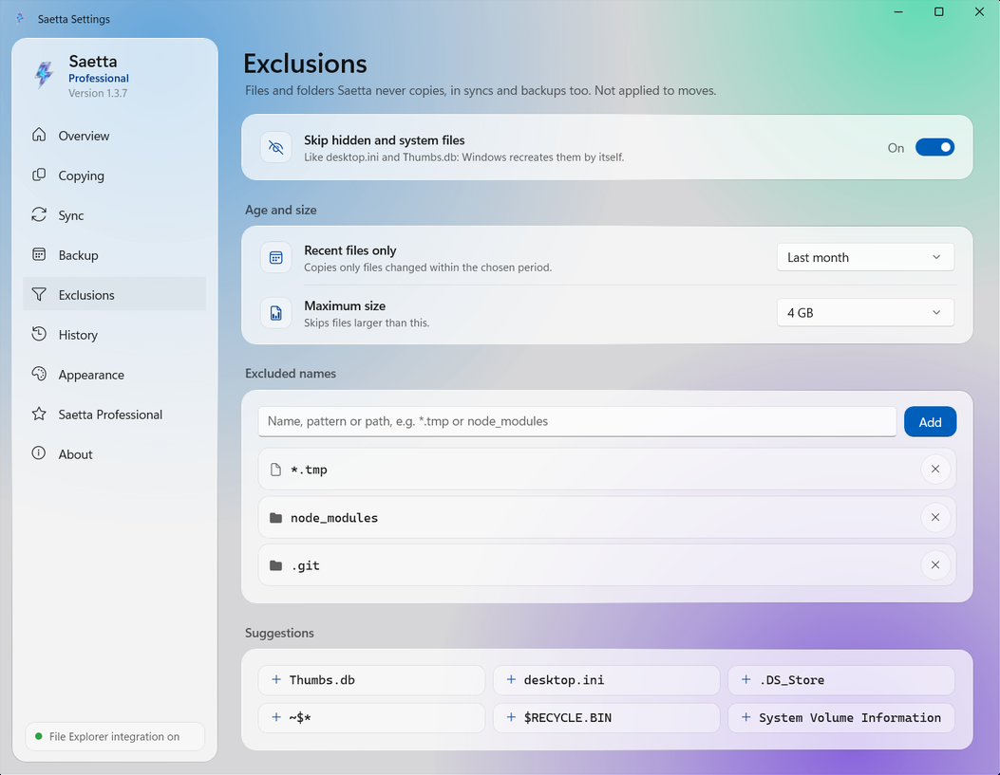

Saetta is the copy program for Windows that works inside File Explorer: it copies thousands of files up to 25 times faster, verifies that every copy is identical to the original and doesn't stop because of a locked file.
Saetta takes the place of Windows copy in the operations where it is slow. It doesn't change the way you work: you select the files in File Explorer, copy them and paste them as always. The rest is done by a copy engine written from scratch.
Fast
With an engine of its own, it tunes every transfer to the physical traits of SSDs, hard disks, USB drives and SD cards.
Reliable
If a file is locked, Saetta doesn't stop: it tries again, finishes the rest of the queue and, when the copy is done, tells you exactly which files were not transferred.
Verified
Every copied file is read back from the disk and compared with the original, so its integrity is guaranteed.
What Saetta does
The main features, one by one.
Ultrafast copies
File Explorer copies one file after another. Saetta can copy files in parallel and picks how to copy based on the drive.
24.7×faster than File Explorer with 20,000 small files: 7.7 seconds instead of 3 minutes and 11 seconds.
Saetta appears in the Windows context menu. If you turn on the integration, Ctrl+V, dragging files and Delete start Saetta too.
Copy, Cut, Paste and Delete
Copy to… and Move to…, even to several folders at once
In protected folders, only the Windows prompt appears
Verified, file by file
When the copy is done, Saetta reads every file back from the disk, computes its fingerprint with dedicated algorithms and compares it with the original's. If even a single byte differs, the file is flagged.
How verification works
OriginalReport.docxxxHash3 · 9F2C 81D0 E41A
=
CopyReport.docxxxHash3 · 9F2C 81D0 E41A
Identical to the original

Copy only what you need
Choose exactly what to copy by filtering on name, file type, size or date, and automatically leave out hidden files, temporary files or whole folders.
All features
Those with the PRO badge require a Saetta Professional license.
Ultrafast copying
Copies files and folders with a proprietary engine that is up to 25 times faster than File Explorer.
Fast integrity verification
Verifies the integrity of every copied file.
Fast delete
Deletes thousands of files in a few seconds with a dedicated delete engine.
Duplicate handling
If a file already exists, choose whether to keep both versions, replace it or skip it.
Error handling
A locked file is reported with its cause and can be copied again individually.
Exclusions
Exclude files and folders by name, type, date or size.
Shell Integration
Copy, move and delete from the File Explorer right-click menu. If you want, Ctrl+V, dragging files and the Delete key work with Saetta too.
Actions on completion
When the copy is finished, Saetta can put the PC to sleep, hibernate it or shut it down.
History and statistics
Every operation recorded, with data transferred, duration and average speed.
Integrity verification with over 70 algorithmsPRO
BLAKE3, SHA-256, SHA-3, Whirlpool, CRC, TIGER and many more.
Resume after an interruptionPRO
If the PC shuts down during a copy, when it is turned back on Saetta resumes it and checks the files already copied.
Folder syncPRO
Keep two folders aligned, whenever you want: with Mirror the destination becomes identical to the source; with Additions only you copy new and modified files without deleting anything. With the preview you see beforehand what will be copied and deleted.
Scheduled backupsPRO
Every day, week, month or year, even with Saetta closed. If the drive is not connected, you get a warning.
Checksum filesPRO
Create and verify .sha256, .md5, .b3, .sfv files and other formats.
ReportPRO
At the end of every job, it generates an HTML or CSV report with the outcome of every copied file.
Final commandPRO
Run a command or a script at the end of every job.
Secure deletePRO
Files are deleted without leaving any trace: no recovery software will be able to find them.
Speed limitPRO
Slows copies down to leave the disk or the network free while you work.
Saetta versus Windows copy
We measured three common operations on the same PC and with the same files, all on the same SSD. Each bar shows the time taken: the shorter it is, the sooner the operation finishes.
Copying 20,000 small files
64 KB files, 1.3 GB in total
24.7×faster
File Explorer3 min 11 s
Saetta7.7 s
Files per second
105 → 2,594
Time saved
3 min 3 s
Deleting 20,000 files
With Saetta's parallel delete engine
4.6×faster
File Explorer13.0 s
Saetta2.8 s
Files per second
1,540 → 7,143
Time saved
10.2 s
Copying 12 GB of large files
Three 4 GB files, such as movies or disk images
−11%time
File Explorer7.9 s
Saetta7.0 s
Average speed
1.64 GB/s → 1.84 GB/s
Time saved
0.9 s
How many times faster, by file size
The same copy done with File Explorer and with Saetta, with files of different sizes. Under each bar, the times of the two programs.
10,000 files of 4 KBnotes, source codeFile Explorer 1 min 34 s · Saetta 4.1 s22.7×
20,000 files of 64 KBdocuments, iconsFile Explorer 3 min 11 s · Saetta 7.7 s24.7×
10,000 files of 1 MBweb images, PDFsFile Explorer 1 min 46 s · Saetta 6.4 s16.5×
640 files of 16 MBRAW photos, musicFile Explorer 15.4 s · Saetta 9.3 s1.7×
40 files of 256 MBshort videosFile Explorer 6.3 s · Saetta 5.7 s1.1×
3 files of 4 GBmovies, disk imagesFile Explorer 7.9 s · Saetta 7.0 s1.1×
Laptop with an Intel Core i7-9750H processor (6 cores), 16 GB of RAM and a 2 TB Samsung 990 PRO SSD: source and destination on the same SSD, with the same files for both programs. Each test was repeated three times per program: we show the middle value. The time includes starting Saetta and writing all the data to the disk; when deleting, both programs remove the files permanently, without going through the Recycle Bin. The race is sped up and keeps the real proportions of the times.